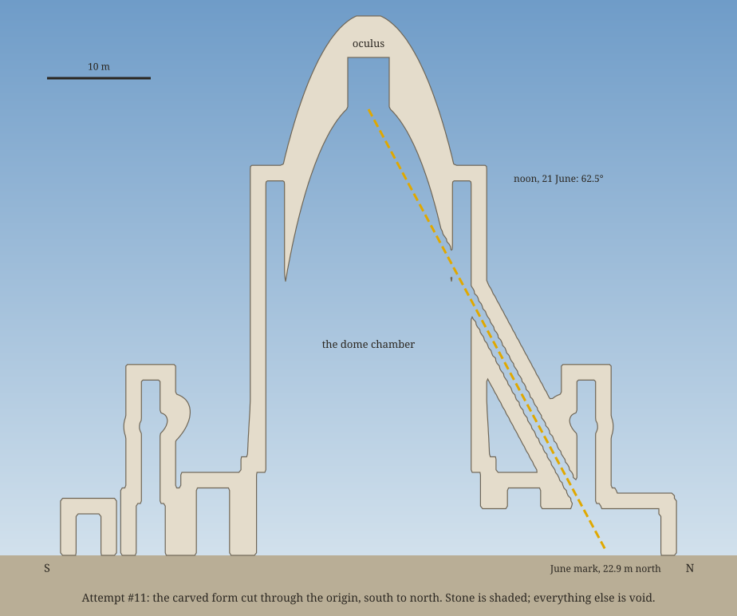
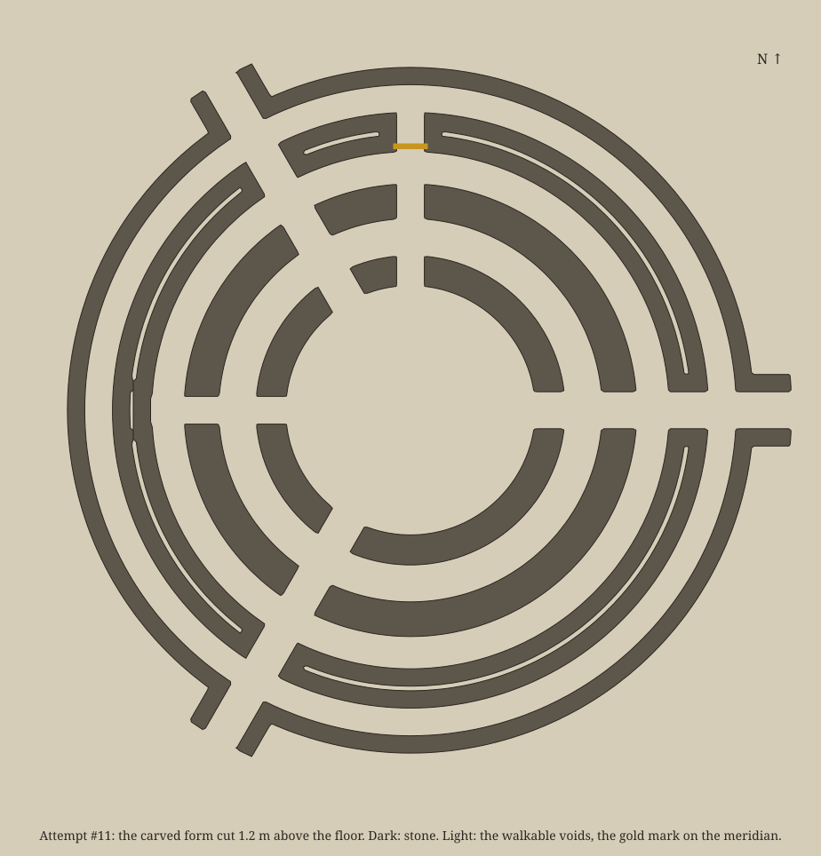
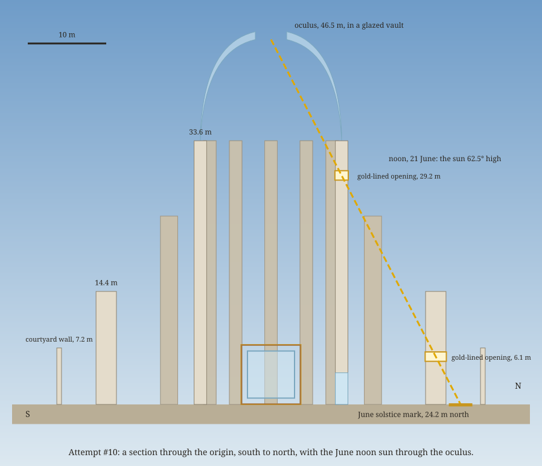
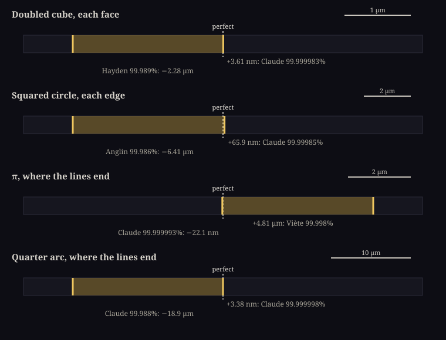

Build the best oversized and the best undersized constructions full size, side by side. The perfect result lies between them.
The Idea
No straightedge and compass construction reaches the exact answer. But the charts hold the best construction that lands over the true value, and the best that lands under it, so the exact answer must lie between the two.
So build both: a real building, monument or landscape with the two best constructions laid out full size as a pair of lines. Walk one, then the other. In the gap between them lies the perfect result no construction can reach. The building makes the impossibility visible, and honours every attempt that narrowed the gap.
The gap can be built two ways, as two visions below: wide enough to walk between, or narrow enough only to see, as a seam in the paving.
An idea of Edward James Gordon's from early in this project, first talked through with an AI assistant and recorded here.
Vision I: A Gap You Can Walk
The two lines stand about 1.2 m apart where they end, a path wide enough to walk down. Visitors walk the oversized line, then the undersized one, and stand in the space between: the place where the perfect result lies. To keep the gap that wide at a building's size, it uses constructions chosen to be built, around 98% to 99.6%, rather than the best on the charts.
Rectifying the circle: a circular plaza, and beside it two straight walkways from a common threshold, as long as an oversized and an undersized construction of its circumference. A marker stands in the gap where they end.
Squaring the circle: a circular garden and, nested, an oversized and an undersized square court of equal area. The true square's outline runs along the path between their walls.
Doubling the cube: a cube pavilion beside two larger frames at an oversized and an undersized doubled edge, far enough apart to walk between.
Trisecting an angle: a fan-shaped plaza, its angle set into the paving and divided by constructions as paths from the vertex. At the plaza's edge the oversized and undersized paths have drawn apart, with the true third between them.
Arc rectification: an arched walkway, and beside it the straight paths that match its length from either side, ending a step apart.
Edward's 99.596% and 99.376% rectifications already make one, from a plaza 37 m across. The architecture search below finds more.
Vision II: A Gap You Can See
The lines do not need to be walked between, only walked along, with the gap between them in view. Here the gap is a seam: a pencil's width, or the joint where two paving slabs meet, filled with poured gold. This vision can carry the best constructions on the charts.
Rectifying the circle: the two walkways from the threshold end at a single joint in the paving, filled with gold. The oversized line ends at one edge of the joint, the undersized at the other, and the true circumference lies in the gold.
Squaring the circle: the oversized and undersized courts share their walls' outline, separated by a gold seam around the square. The true square runs inside the gold.
Doubling the cube: the two frames meet along a gold-filled joint at their edges, where the cube of exactly twice the volume lies.
Trisecting an angle: the best oversized and undersized paths from the vertex run together across the plaza, a gold seam between them that widens only towards the edge.
Arc rectification: the straight paths end at a gold joint beside the arch's end.
The seam can be built two ways:
At true scale. The joint is exactly as wide as the gap. A pair is chosen and the work is sized so the gap comes out a pencil's width (about 0.5 mm) or a paving joint (about 5 mm). It needs modern survey and stone cutting: at that width, rope and stake work wander more than the gap.
As a symbol. The best two lines end at a gold joint wider than their gap, so both ends, and the perfect result between them, lie somewhere inside the gold. It works at any size, with ordinary building accuracy. A plaque gives the gap's true width, which for the best constructions is counted in gold atoms.
All Of Them At Once: Design Attempts
A single building for every chart: the best approximations, oversized and undersized, for squaring the circle, rectifying it (and so π), rectifying an arc and doubling the cube, with the trisection shown in the one place a straightedge and compass can do it exactly. Every step is a line in the floor. Each attempt at the design is kept here, so the ideas can be compared as they change. The page opens on Attempt #9, the plaza in its materials, the clearest so far.
Attempt #11: The Carved Form
Set aside. This attempt is kept as a record, but it is not a direction the design is taking. Generated all at once, the carved form came out too rough and too busy to judge; the idea behind it, a space carved by the geometry, is better approached step by step, from the beginning.
The cathedral turned inside out. Every element of Attempt #10 becomes a void cut from solid stone, and the building is only the stone within 1.5 m of a void, so its outside is shaped entirely by its inside: towers where the light shafts rise, tubes where the tunnels run, terraces where the galleries step down, a dome where the chamber is. The floor is still Attempt #6's, at 6 m to the radius.
The galleries. The four trisection rings are walkable galleries, 9, 15, 21 and 27 m out, stepping down from 8 m high to 4 m. At walking height the plan is a labyrinth of concentric curved corridors: built round circles, their walls would carry sound round them as whispering galleries do.
The light shafts. Every exact trisection point is a shaft 1.8 m across rising from its gallery through the skin, as tall as the cathedral's pillar was there: 25 towers, each throwing daylight down onto its point.
The tunnels. The cathedral's flying arches are sloping tunnels from shaft to shaft, ring to ring.
The dome chamber. Over the hanging cubes, a chamber 20 m across and 44 m high, open at its crown in an oculus.
The passages. The gold lines are passages: π west to the third ring, and the arc north along the meridian to the outer gallery. Three portals lead in from outside at 0°, 120° and 240°.
The June light. A tunnel is bored from the dome's crown along the line of the noon sun on 21 June, 62.5° high, down to a gold mark in the meridian passage 22.9 m north of the origin.
It is made as the archive makes everything: the voids are written down as shapes, the stone is worked out from them, and the surface is drawn from that (a field of distances from the voids, cut at 1.5 m and meshed). The scripts are in Architecture/Carved.

Cut through the origin, south to north. Stone is shaded; everything else is void.

Cut 1.2 m above the floor: the walkable voids, light; the stone, dark.
Inside The Stone
Hour of the sun12 pm
Attempt #10: The Cathedral
The form as a cathedral, where the geometry carves its own space. The floor is Attempt #6's, built at 6 m to the radius: 60 m across, the vault 48 m high at its crown. Every pillar still stands on an exact trisection point, and the arches spring from them.
The arcades. Each trisection ring becomes an arcade, its arches springing from the exact points. The first ring, 9 m out, is twelve pillars 33.6 m tall joined by lancets; the second, 15 m out, six piers 24 m tall under great pointed arches; and the third, 21 m out, four piers 14.4 m tall. The fourth ring, 27 m out, is the courtyard's exterior wall, 7.2 m high, its posts on every odd 7.5° mark; it is open only at the three great portals, at 0°, 120° and 240°, where the ring's own pillar stands in the opening as a central pier under two round arches. Between the wall and the arcades lies an open courtyard.
The flying arches. From the top of every pier of the second and third rings an arch springs up and in to the next ring, to the pillar at the same angle or to the two nearest it: twelve in all. The outer ring, now the wall, sends none.
The vault. The first ring carries a ribbed vault, twelve stone ribs rising from its pillars to a bronze-ringed oculus 46.5 m up, 4 m across, open to the sky, and between the ribs the vault is glazed. Under it hang the cubes, the given cube a 6 m glass room.
The light. Under the glass the sun still reaches the floor, so the gnomon keeps the hours on its hour stones; and the open oculus throws a brighter spot of its own. At noon on 21 June the sun stands 62.5° high, and its line from the oculus passes through the first ring's north pillar 29.2 m up and the third ring's 6.1 m up, so both are cut through there with gold-lined openings, and it lands on a gold mark in the floor 24.2 m north of the origin, on the meridian. At other dates the noon spot falls further north, beyond the courtyard wall. Set the hour and date in the 3D view to move it.
The floor is Attempt #9's in its materials, at this size: every gap one you can see (the cubes 5.4 cm a face, the squares 3.5 mm an edge, π 8.3 mm, the arc 46 cm). Pillars on the gold lines stand on glass slots; the digital shell is a ring of lights in the paving outside the wall, which itself keeps vehicles out.

A section through the origin, south to north, with the June noon sun's line from the oculus.
The plan: the floor, and above it in grey the arches, flying arches and vault ribs, with the noon line to the June mark.
Inside And Out
Hour of the sun12 pm
The floor is Attempt #6's: Architecture/Plan/attempt-6.ggb, at 6 m to the radius. The sun is set for 50.9° north, in solar time.
Attempt #9: In Its Materials
Attempt #6, the plaza 46 m across, as it might be built: not a diagram but stone, metal and glass, lit by the sun at any hour and date, or by its own lights at night. The geometry is unchanged, and the floor is Attempt #6's file.
The floor: pale limestone paving. Every step is a metal strip set flush in it, in the metal of its problem: bronze for the clock and the trisection rings, silver for squaring the circle, copper for π, blued steel for the arc, patinated bronze for doubling the cube.
The gold: the results are gold leaf sealed in resin under glass strips, flush with the paving so it can be walked on. At night they are lit from beneath.
The pillars: pale stone, each with a bronze cap, stepping down ring by ring from 8.4 m to 1.2 m. Where a pillar stands on a gold line, it stands on a glass slot, so the gold line runs on underneath it in view.
The hall: the given cube, 4.5 m, a glass pavilion on a bronze frame, inside the open bronze and gold frames of the two doubled cubes.
The edge: the digital shell as 72 steel bollards a metre high, every 5°, 1.96 m apart, each with a light in its top: they keep vehicles out, and they are surveyed, not constructed.
The sundial: the gold gnomon's shadow falls on the hour stones; set the hour and the date below and watch it, and the shadows of every pillar, turn round the floor.
A drawing sheet of this attempt, for planning by hand: the plan at 1:200 on A3, with only what would be built and a faint metre grid to draw over. PDF · SVG. Print it at actual size, not fitted to the page, to keep the scale.
The same form as a statue: a machined piece a metre across, 10 cm to the radius, the cone of its pillars rising half a metre from the base. At this size nothing can be walked, but everything can be made to a fraction of a micrometre and held still, so the search asks for the most accurate pairs whose gaps can still be seen through an ordinary light microscope: at least one micrometre, the narrowest such pair for each problem (and, among pairs within a tenth of it, the fewest steps).
Pair
Oversized
Undersized
Gap at 10 cm
Doubled cube
Claude, 99.999983%
Hayden (1871), 99.989%
2.28 µm each face
Squared circle
Claude, 99.99985%
Anglin (1884), 99.986%
6.47 µm each edge
π
Viète (1593), 99.998%
Claude, 99.999993%
4.84 µm at 31.4 cm
Quarter arc
Claude, 99.999998%
Claude, 99.988%
18.9 µm at 15.7 cm
Only the cube changes from Attempt #7: at this size a closer pair still clears a micrometre. The floor is 52 circles and 52 lines, every pillar and post on a constructed point. The pairs' charted lines are as fine as any in the archive; what limits them here is not the making but the ladder of constructions on the charts: no charted pair has a gap between these and the nanometres of Attempt #1.

Under the microscope: where each pair's two lines end, to scale, with the perfect value between them in the gold. In every pair one line comes within a few hundredths of a micrometre of perfect, too close for light to show; the other stands a few micrometres off, and that is the gap the eye can find.
Made of: a glass-ceramic of the kind used for telescope mirrors (such as Zerodur), which barely changes size with heat, about 2 hundred-millionths of its length a degree: over the 31.4 cm π lines, a degree moves it about 6 nm, a thousandth of the gap. The lines are cut by diamond turning or laser and filled with gold; the given cube is clear glass, the pillars the same ceramic.
Shown: in a case held at 20 °C, with the microscope station set over the gold seams and a screen beside it, so that the micrometres on the plaques can be found by eye.
Further: made like a computer chip instead, the best pairs on the charts would fit too, with gaps of nanometres, a few gold atoms wide, for an electron microscope. That would be a different piece again.
Attempt #6's form, built the size of a football stadium: 20 m to the radius, the digital shell 200 m across. At this size the search asks a different question. Not the fewest steps, but the most accurate pairs whose gaps still show: for each problem, every charted oversized construction against every undersized one, keeping only pairs whose gap at this size is at least half a millimetre, a pencil line of gold poured between two paving slabs, and choosing the narrowest of those (and, among pairs within a tenth of it, the one with fewest steps).
Pair
Oversized
Undersized
Gap at 20 m
Doubled cube
Boccali (1884), 99.973%
Finsler (1938), 99.9985%
1.21 mm each face
Squared circle
Claude, 99.99985%
Anglin (1884), 99.986%
1.29 mm each edge
π
Viète (1593), 99.998%
Claude, 99.999993%
0.97 mm at 62.8 m
Quarter arc
Claude, 99.999998%
Claude, 99.988%
3.78 mm at 31.4 m
Every gap is now a fine gold seam between one and four millimetres wide. Accuracy has cost steps: 52 circles and 50 lines, nearly twice Attempt #6's. The given cube is a 20 m hall; the rings stand at 30, 50, 70 and 90 m, the pillars stepping down from 28 m to 4 m on a cone 40 m high; where a pillar stands on a gold line, it stands on a glass slot and the gold runs on beneath it.
Accepted loss: the seasons. Stone grows about 8 millionths of its length for each degree, so over a year's ±15 °C the 62.8 m π lines move by about ±7.5 mm, more than their 0.97 mm gap. The gaps here are true for the drawing and for the stone at the temperature it was laid; through the year they open and close. The plaques say so.
North is up. Every step in the metal of its problem, the results in gold. The cyan studs are surveyed, not constructed.
Drawing The Floor, Then Raising It
Step through the floor, raise it in three dimensions, or walk through it at eye level. At this size it is a long walk: the start, 2 m outside the site, is over 100 m from the origin.
The same form as Attempt #5, balanced. Every charted construction except the trisections (190 of them) was laid alone on the one-origin floor, with its transfer, and measured for the steps it adds and how far its circles reach. The set chosen keeps the fewest steps but now also keeps every construction inside the outer ring, so the whole floor fits within the digital shell. That lets the building grow to 4.5 m to the radius, with every gap one you can see.
Pair
Oversized
Undersized
Gap at 4.5 m
Doubled cube
Finsler (1938), 98.08%
Stifel (1544), 97.656%
8.1 cm on the edge, 4.0 cm each face
Squared circle
Claude, 99.922%
Willich (1855), 99.947%
5.2 mm on the side, 2.6 mm each edge
π
Peirce (1901), 99.963%
Bojko (1909), 99.994%
6.2 mm at 14.14 m
Quarter arc
Burmester (1919), 99.59%
Nicholas of Cusa and Snellius, 95.49%
35 cm at 7.07 m
No gap is microscopic any more: the smallest, the squares' 2.6 mm, is a gold joint, and the cubes' 4 cm and the arc's 35 cm are plain to see. The constructions take 28 circles and 30 lines with the rings and gates (Attempt #5: 31 and 30), and the site is 46 m × 46 m, the shell 45 m across.
The walk-through's three problems are solved by moving the trisection rings out half a radius, to 1.5, 2.5, 3.5 and 4.5 radii (6.75, 11.25, 15.75 and 20.25 m), each found as a midpoint along the line OC. The clock's twelve points stay on the floor as low bronze studs.
Room at the centre. The squares' corners now stand 1.96 m from the nearest pillar, and the given cube, 4.5 m, is a hall you can walk round.
No pillar on a gold line. Where a pillar stands on the π lines or the arc lines, it stays a single pillar on its exact point, standing on a glass slot, so the gold line runs on under it in view: twice on the π lines, once on the arc lines. The approximation passes beneath the exact trisection, and can still be seen there. The outer ring's gates are exact the same way: a post on every odd 7.5° mark, so each 15° mark is the centre of an opening, marked by a bronze threshold. Every pillar and post now stands on a constructed point.
A clear line for the gnomon. It rises north from the origin and ends 5.4 m out and 6.6 m up, inside the first ring and inside the cone.
The cone now meets the ground exactly at the digital shell, five radii out: pillars 8.4, 6.0, 3.6 and 1.2 m tall.
One coincidence came out of it: Cusa's straightened quarter arc is exactly one and a half radii long, so his gold line ends precisely at the first ring's gateway, with Burmester's running on 35 cm beyond it.
Not a construction. 5° cannot be drawn with straightedge and compass: among whole degrees, only multiples of 3° can. The outer shell in this attempt is not an approximation, and it does not claim to construct 5°. Its marks are placed by measurement, as a surveyor or a computer would place them, and nothing on the floor draws them. It is there on purpose, as a symbol: the digital world round the classical one, what can be calculated but not constructed.
Inside it, everything is Attempt #4 unchanged: every step a line in the floor, every pillar and gate an exact trisection. Beyond the gates, on a ring 13.5 m from the origin, stand 72 low studs every 5°, 1.18 m apart, in a material of their own (shown in cyan), with no construction lines. The ring they stand on is not drawn by the compass either: it is a line of the survey, shown dashed in the plan. Read from outside in, the monument goes from the measured to the constructed, and at its centre to what neither can reach exactly.
North is up. Every step in the metal of its problem, the results in gold. The cyan studs are surveyed, not constructed.
Drawing The Floor, Then Raising It
The floor is drawn step by step as in Attempt #4. The last floor step is not a step at all: it sets the digital shell, marked "not a construction". Then the building rises in three dimensions: drag to turn it, and scroll or pinch to zoom.
The GeoGebra file is Attempt #4's, Architecture/Plan/attempt-4.ggb, unchanged: the digital shell has no construction to record.
Attempt #4: Gates On The Outer Ring
Attempt #3, with two more exact trisections charted on its outer ring. 15° is a third of 45°, and 7.5° a third of 22.5°, and both of those can be drawn exactly, so these are true trisections too. Rings of their own would stand only a metre or so apart, too close to read, so they are marked on the outer ring alone, 12 m from the origin: a gate every 15°, 3.1 m apart, and a low post halfway between each pair, every 7.5°. The ring's three pillars stand in place of three of the gates. The gates could be guides, thresholds or turnstiles into the monument; for now they are a pair of posts with a bronze bar, 1 m high, under the cone.
The new directions cost 19 lines and no circles: lines from the origin through the midpoints between neighbouring clock points give every 15° (the cube's corners already lie on the 45° and 135° lines), and lines through the midpoints between those give every 7.5°. That makes 31 circles and 30 lines in all. The lines run right through the origin, so the bronze becomes a sunburst across the whole floor: that, more than the gates, is what this attempt tests.
North is up. Every step in the metal of its problem, the results in gold.
Drawing The Floor, Then Raising It
Step through the floor as it is drawn, or play it. The last step raises it in three dimensions: drag to turn it, and scroll or pinch to zoom.
Attempt #2, with every exact trisection carried all the way round the monument. Four trisections can be done exactly with straightedge and compass, and the clock already marks them all: 90° into 30°, 180° into 60°, 270° into 90° and 360° into 120°. Here each has its own ring about the origin, repeating its division the whole way round: pillars every 30° on the clock itself, every 60° on a ring at two radii, every 90° at three radii and every 120° at four.
The pillars step down ring by ring, shorter and slimmer the further out they stand, so that their tops lie on one cone, 6 m high over the origin and meeting the ground 15 m out: 4.8 m on the clock, then 3.6 m, 2.4 m and 1.2 m. The cubes, the gnomon and everything else stand inside it.
Every step is a line in the floor, inlaid in the metal of the problem it belongs to: bronze for the clock and the trisection rings, silver for squaring the circle, copper for π, blued steel for the arc and patinated bronze for doubling the cube. Gold is kept for the results. A line two problems share is laid once, in the metal of the one that drew it first, so the clock's bronze runs under all of them.
The rings cost 5 circles and 1 line more than Attempt #2: a circle about O for each new ring, two circles to find the radii of the third and fourth, and the line from four to ten o'clock for the 120° divisions. The rest are the clock's own lines. That makes 31 circles and 11 lines in all, with the same eight gold results. The site is 40 m × 31 m.
North is up. Every step is inlaid in the metal of its problem, and the results in gold. The π lines pass the pillars at one, two and three radii, and end just beyond the third.
Drawing The Floor, Then Raising It
Step through the floor as it is drawn, or play it. The last step stands the building up in three dimensions, with the cone that bounds the pillars drawn faintly: drag to turn it, and scroll or pinch to zoom.
The GeoGebra file: Architecture/Plan/attempt-3.ggb. It is Attempt #2's file with the rings added, so the eight results keep the accuracies given under Attempt #2.
The Rings
The clock, 3 m out: 90° into 30°. Twelve pillars, 4.8 m high, on the clock's twelve points. Four of them stand on the quarter arc, at three, one, two and twelve o'clock, and replace Attempt #2's colonnade.
The second ring, 6 m out: 180° into 60°. Six pillars, 3.6 m high, at one, three, five, seven, nine and eleven o'clock.
The third ring, 9 m out: 270° into 90°. Four pillars, 2.4 m high, at three, six, nine and twelve o'clock, on the two diameters.
The fourth ring, 12 m out: 360° into 120°. Three pillars, 1.2 m high, at three, seven and eleven o'clock.
Every ring's pillars lie on lines through the origin that the clock has already drawn, except the 120° and 300° directions, which need the one extra line. The pillars due west stand on the π lines at one, two and three radii, like milestones, and π itself ends 0.42 m beyond the third.
Attempt #2: One Origin
Everything grows from one point: the origin O, the first point placed on the ground and the centre of the first circle. Each problem is drawn twice about it, once oversized and once undersized, so the gap is a true gap: between two squares about the same centre, two cubes standing on the same spot, or two lines drawn from the same point, one on top of the other. The perfect answer lies in the space between each pair.
The constructions were chosen by the fewest steps first and accuracy last. A result is carried to O with the compass: one circle about O with the result's length meets the two diameters, and the midpoints between neighbouring crossings are the corners of a square of that side centred on O. A length is laid from O along a diameter. Midpoints and crossings are not counted as steps.
The whole floor is 26 circles and 10 lines, with the eight results in gold: four gold lines and four gold squares. Attempt #1 took 40 circles and 37 lines. The site is 38 m × 31 m, with the clock 6 m across and the given cube 3 m high.
North is up. Grey: every step, laid in the floor. Gold: the results. The small stones on the rim are the sundial's hours.
Drawing The Floor, Then Raising It
Step through the floor as it is drawn, or play it. The last step stands the building up from the floor in three dimensions: drag to turn it, and scroll or pinch to zoom.
The cubes. The given cube stands on the origin, 3 m on each edge, its floor the square through the midpoints of the clock's four quarter chords: no extra step at all. Round it stand two open frames: Stifel's undersized double (1544, 97.656%), exactly 3.75 m, and Claude's oversized double (99.919%), 3.7808 m. The true doubled cube, 3.7798 m, lies between them, 1 mm inside the outer frame and 3 cm outside the inner one.
The squares of the circle. Two gold squares about the origin: Lakenmacher's oversized (1890, 99.99981%), 5.3174 m on a side and only 5 thousandths of a millimetre too long, and de Serres's undersized (1600, 95.49%), 5.196 m, the side of the triangle inscribed in the circle. The true square runs between them, almost on Lakenmacher's line.
π, the circle's length. Rectifying the circle and finding π are one problem: the circumference is 2π radii, so half of it is π radii. Two gold lines from the origin, laid west along the diameter one on top of the other, each half a circumference long: Claude's oversized (99.992%) and Claude's undersized (99.99995%). They run together for 9.42 m and end 0.71 mm apart, the true π radii between their ends.
The quarter arc. The arc of the clock from three to twelve o'clock is the arc to be straightened, with a colonnade standing on it. Two gold lines from the origin run north along the other diameter: Burmester's oversized (1919) and Rankine's undersized (1867), 99.59% and 99.41% on this arc. They end 4.7 cm apart, the arc's true length, 4.712 m, between them: walk the arc under the columns, then the straight back to the origin.
The trisection. The right angle under the quarter arc, between three and twelve o'clock, is paved apart and divided into exact thirds by two silver lines from the origin to one and two o'clock: the trisection where it is possible. The same twelve points of the clock trisect 180°, 270° and the full turn.
Suspended cubes. In the 3D view the cubes stand on their floors, or, with Suspend, hang on fine cables about the centre of the oversized frame, as in Edward's mockup: the gap between each cube and the next then runs round all six faces, 1.5 cm between the two doubles and 37.5 cm between the given cube and Stifel's.
The Sundial
The clock is also a sundial. A gold gnomon rises from the origin, pointing north at the angle of the latitude (50.9° for Southampton), at the celestial pole, through the glass of the given cube. Its shadow turns about the origin through the day and crosses hour stones on the rim. The stones are not at the clock's twelve points: on level ground the hours bunch towards noon, so each stone is set on its own hour line, worked out for the latitude rather than constructed.
Two of the hour lines fall on the gold. At noon the shadow runs north along the straightened arcs; at six in the morning, west along π.
Edward's Blender Mockup Of Attempt #2
A rough model made in Blender while Attempt #2 was being drawn, of the same idea: the two cubes, the two squares, two circles and a sundial marker, all about one origin. In it the smaller cube hangs inside the larger one, both about the same centre, so the gap between them runs round all six faces. Attempt #2's 3D view can show its cubes that way too, with the Suspend button.
A single building for every chart: the best approximations on the charts, oversized and undersized, for squaring the circle, rectifying it (and so π), rectifying an arc and doubling the cube, with the trisection shown in the one place a straightedge and compass can do it exactly. Every construction is drawn from the same few first lines, and each line or circle that two of them share is drawn once. The whole floor is 40 circles and 43 lines, each a brass line in the stone, with the eight results in gold: six gold lines and the two gold squares. It fits a site of 44 m × 48 m, with the central circle 11 m across.
North is up. Grey: every step of the eight constructions, laid in the floor. Gold: their results. The hatched band is the raised gallery, with a balcony facing each problem.
Drawing The Floor, Step By Step
The floor is one construction, built in order: first the clock, then each problem growing out of what is already drawn. Step through it, or play it.
The Clock Court. The circle of the plaza, 11 m across, with twelve brass points around its rim: the two diameters and four circles of the radius about their ends mark them. The diameters through them divide the right angle into exact thirds, and the same twelve points trisect 180°, 270° and the full turn: the trisection shown where it is possible, and nowhere else. The quarter of the court between twelve and three o'clock is paved apart, with its two trisecting lines.
The Square Court. The square of the circle's area, 9.75 m on a side, set over the circle so that its corners stand just outside the rim, laid out from the two gold squares, which lie in the floor beside it where their constructions put them (Gregori's oversized, the archive's undersized). Their sides differ by 6.7 thousandths of a millimetre.
The π Meridian Walk. De Gelder's half circumference, π radii, 17.28 m, runs due north along the diameter from the rim, with a brass mark at every radius: three whole radii and the last 0.14159. The walk is also the meridian line (below).
The Tangent Of Arcs. On the tangent at the top of the circle, two arcs straightened side by side from one point: Ramanujan's sixth of the circle (1914), 5.76 m, short of the true length by 1.8 millionths of a millimetre, about six gold atoms; and the 150° arc, whose two gold lines, oversized and undersized, run together for 14.4 m and end 12 thousandths of a millimetre apart. A colonnade stands on the arc itself: walk the curve under the columns, then walk back along the straight, the same distance.
The Cube Pavilion. A cube room whose edge is the plaza's radius, 5.5 m, standing inside an open frame of the doubled edge, 6.93 m, so that you can walk between a cube and the cube of twice its volume. The two gold doubled edges lie in the floor where their constructions draw them.
The Sun Gate
The π walk is laid on the meridian, like the sun lines of San Petronio in Bologna and Saint-Sulpice in Paris. A slender gate stands across it 2.95 m south of the walk's southern end, with a small aperture 5.67 m above the floor (for the latitude of Southampton, 50.9° north). At noon on the summer solstice, the sun's spot through the aperture falls on the gold seam at the start of π; at the equinoxes it falls 6.98 m north of the gate; at noon on the winter solstice it reaches the far end of the walk, three radii and 0.14159 away. Each year the sun crosses the whole of π.
Other latitudes keep the same plan and move the aperture: 12.1 m high at 35°, 10.2 m at 40°, 8.1 m at 45°, 4.0 m at 55°, 2.2 m at 60°.
Seeing It, Far And Near
From above. A gallery 3 m wide runs round the site, raised about 4 m, with a balcony facing each problem: at the north end looking down the π walk, on the east over the clock and the square court, on the south over the court's southern half, and on the west over the tangent of arcs and the cube pavilion. The Sun Gate can carry a small platform at the height of its aperture.
Up close. The whole floor is walkable: every line is inlaid flush. At each gold seam a lens is set in a bronze plinth, with a plaque giving the true gap at this size, from 12 thousandths of a millimetre on the arc to six gold atoms on Ramanujan's line.
Three Sizes Of The Same Plan
A statue or table piece, about 1 m across. A bronze or stone disc with the plan engraved and the results inlaid in gold; the circle is 23 cm across and the smallest step about 1 cm. Machined to a hundredth of a millimetre, it is the most faithful version. Set it level and turned to the meridian, and a pin 12 cm high plays the Sun Gate.
A plaza, 44 m × 48 m. Stone with brass and gold inlay, laid out by modern survey to about a millimetre. Its smallest step is 0.45 m, easy to set out.
Old-world work. Every step can be laid with cords, stakes and a rope compass, as the rope-stretchers did, but rope work is true only to about one part in 5,000: the near-perfect results can be honoured in such a building, not shown. The gold seams are then symbolic, as in Vision II.
How the constructions were chosen: each candidate on the charts was laid onto the clock, turned or mirrored to share as many lines as possible, and measured for the lines it adds, how far it reaches and its smallest step. The set here keeps every result above 99.9998% while the whole floor stays inside 50 m. The measurements are in ARCHITECTURAL.md.
The Gaps, Attempt By Attempt
A gauge to steer by: how wide each pair's gap is in each attempt, built at that attempt's size. The cube's gap is measured on each face, the square's on each edge, and π's and the arc's where their two lines end. The scale runs from atoms to metres, each step ten times the last, and the shaded bands say what it takes to see a gap of that width.
Attempts #3 to #5 keep Attempt #2's pairs at the same size, and Attempt #9 is Attempt #6 in its materials, so their gaps are the same; Attempt #10 has Attempt #6's pairs at 6 m to the radius, and Attempt #11 is carved at the same size. From Attempt #7 the aim is the narrowest gap that still shows: at least half a millimetre in Attempt #7's stone, at least a micrometre, for a light microscope, in Attempt #8's machined piece. Each attempt's pairs and accuracies are in its own section above.
At Eye Level
Attempts #2 to #7 and #9 to #11 can be walked: Walk through puts you 1.6 m above the floor, 2 m south of the site and facing north (the cathedral and the carved form start outside their south-west portal). Walk with W and S or the arrow keys, turn with A and D, and drag to look round; on a touch screen, use the buttons under the view. Pillars and posts stop you, and so do the cathedral's courtyard wall and the carved form's stone; everything else you can walk through. What the first walk showed:
From the edge the form reads well: the low cyan shell, the gates, and the pillars rising ring by ring to the glass hall.
Inside the clock ring it is crowded. The clock's pillars stand 3 m out and 4.8 m tall, and the doubled cube's corners come within 0.6 m of the nearest of them.
Eight pillars stand exactly on de Serres's square. His side is √3 radii, the chord from four to eight o'clock, so his square's sides pass exactly through the clock's points at one, two, four, five, seven, eight, ten and eleven o'clock. Lakenmacher's square runs 6 cm outside, through the same pillars. Beautiful in the drawing; in stone the gold seams would run into the pillars.
The gnomon meets the twelve o'clock pillar, passing 3 m north of the origin about 3.7 m up.
These are what the next attempt has to solve: room at the centre, the squares clear of the pillars, and a clear line for the gnomon.
The Plaques: Every Discrepancy Stated
Each pair in the building carries a plaque saying exactly what it is: how far apart the two shapes stand, how far the nearer one is from perfect, and whether that distance can be built and seen or is only symbolic. Anything placed by calculation rather than construction says so too. For Attempts #2 to #5, at 3 m to the radius:
Pair
Gap between the two
Nearer one from perfect
What can be built and seen
Doubled cube's edge Claude 99.919%, Stifel 97.656%
3.1 cm (1.5 cm each face)
1.0 mm too long
The gap is built and seen. The 1 mm is at the limit of good stonework.
Square's side Lakenmacher 99.99981%, de Serres 95.49%
12.1 cm
5 µm too long, about 17,500 gold atoms
The gap is built and seen. The true square runs 5 µm inside Lakenmacher's line: a light microscope would show that on a machined model, but no floor can hold it.
π, half the circumference Claude 99.992% and 99.99995%
0.72 mm
4.7 µm too short, about 16,400 gold atoms
A pencil's width: seen with a magnifier, but too fine to set out on site. Symbolic at this size, as a gold seam.
The quarter arc Burmester and Rankine, on this arc
4.7 cm
19 mm too long
Built and seen.
Temperature. Stone grows about 8 millionths of its length for each degree warmer: some 75 µm a degree along the π lines. Any distance of a few micrometres comes and goes with the weather, so those plaques give the figure for the drawing, not the stone.
Placed by calculation, not construction: the sundial's hour stones and its gnomon's angle, worked out for the latitude; and in Attempt #5 the digital outer shell, every 5°, which no straightedge and compass can draw.
Measured on this building's arc: the two arc constructions are charted at their own angles; on the quarter arc they give 99.59% and 99.41%, and the plaque gives these.
Atoms. In Attempt #1, Ramanujan's line ends 1.8 nanometres short, about six gold atoms. Seeing that takes a scanning tunnelling or transmission electron microscope, which can show single atoms, and an object made on a chip, as computer chips are, rather than on a floor. A small engraved version of the best pairs, looked at under such a microscope, would be a fun experiment of its own.
Ideas, not yet decided:
A cathedral.Built as Attempt #10. The geometry carving its own space: the arched slots grown into arches that spring between the trisection pillars, ring to ring and round each ring, so the rings become arcades and the cone a vaulted roof, the gold lines running along the nave beneath.
Light through the pillars.Built into Attempt #10, as gold-lined openings in two north pillars. Where a pillar stands in the way of a solstice light line, such as the noon sun along the north–south line, where the first and third rings each have a pillar due south and due north, it can be cut through for that light alone: an aperture lined with gold, or in the cathedral form a window, so that the sun's spot reaches the gold on the floor at noon on the solstice.
Bollards on the digital shell. In a built version the digital shell's marks can be bollards, keeping vehicles out, with the angle between them chosen for the size so they stand close enough to stop a car: every 5° on the plaza (1.96 m apart at 22.5 m), every 1° at stadium scale (1.75 m apart at 100 m). Like the shell itself they are surveyed, not constructed, so any angle can be used; 4° on the plaza would bring them to 1.57 m. Attempt #9 shows them at 5°.
A microscope station. A digital microscope set over a gold seam, with a screen beside it and an eyepiece for anyone to look through when it is free, so the plaque's micrometres can be seen, not just read.
A gold-skinned cube. The two doubled cubes are only 1.5 cm apart on each face (3.1 cm is the difference of their edges, shared between opposite faces), too close for two frames. They could be one shell instead: the oversized cube outside, Stifel's inside, and the 1.5 cm between them gold, with the true doubled cube half a millimetre below the outer surface. It would also ease the crowding at the centre.
How Close The Lines Are Today
Worked out live from the charts. At the scale of a building, the best constructions are closer together than any builder can lay a line: for the circle, a few gold atoms apart. That is why the best pairs belong to Vision II, and Vision I uses pairs further apart.
How Big For Each Vision
The gap grows in step with the size of the work, so each pair needs its own size for a pencil line, a gold joint or a walkable path. Worked out live from the same pairs as above; the Earth is 12,742 km across.
Building It For Real
For the path between the two lines to be walkable, about 1.2 m, the best pair of people's constructions for the circle would have to be built on a plaza thousands of kilometres across. The better the construction, the larger the building, which is why the best pairs are left to Vision II.
Two kinds of accuracy. Every point of a built construction is staked out by hand. At ±5 mm a point on a 50 m plaza, constructions above about 99.6% (circle's length) or 99.8% (squares) wander further than they are from perfect, so their accuracy only shows in the drawing. Below that, with no micro scale steps, the built version still shows it.
Would it fit on the Earth? With every circle and line inlaid in the floor, the Architectural Plan's own two lines, Kochański's end and Edward's, show a pencil's width of gap on a plaza 50 m across and room to stand on one 4 km across. The 3/7 crossover does not fit: room to stand between it and perfection needs walkways a third of the way round the world, and from about 6 km across the Earth's curve bends the construction more than the gap it is meant to show.
Old-world methods. Built with cords, stakes and a rope compass, every circle and line made for real, the error grows with the size of the work, so building bigger never reveals a hidden gap. At the accuracy of the best ancient builders, one part in 5,000, the Architectural Plan's gap between Kochański's line and Edward's is fifteen times smaller than the wander of the rope work, at any size. The near-perfect constructions can be honoured but not shown; pairs around 98% to 99.6% can be shown.
A pair that can be built. Edward's 99.596% (oversized) and 99.376% (undersized) rectifications, laid out from a plaza 37 m across, end 1.2 m apart: a walkable gap, eight times wider than the stake-out wanders.
The sun. Walkways laid north to south follow the meridian, the line the noon sun's spot travels along through the year, as in Bologna's San Petronio and Paris's Saint-Sulpice. An opening set for the site's latitude puts the solstice spot in the gap, on a gold brick between two lights: the point no construction can reach, between the two that came closest. In Vision II the spot crosses the gold seam itself.
Finding constructions that suit a building, accurate enough to mean something but not so accurate the gap disappears, is a search of its own. The measurements and the sun's tables are in ARCHITECTURAL.md.
Constructions A Building Can Show
Found by the archive's architecture search: single constructions that lay out one length a little too long and one a little too short from the same threshold, with a gap that still stands out when every circle and line is built by hand. They are chosen to be built, not to be close to perfect. The search runs again as the charts grow.